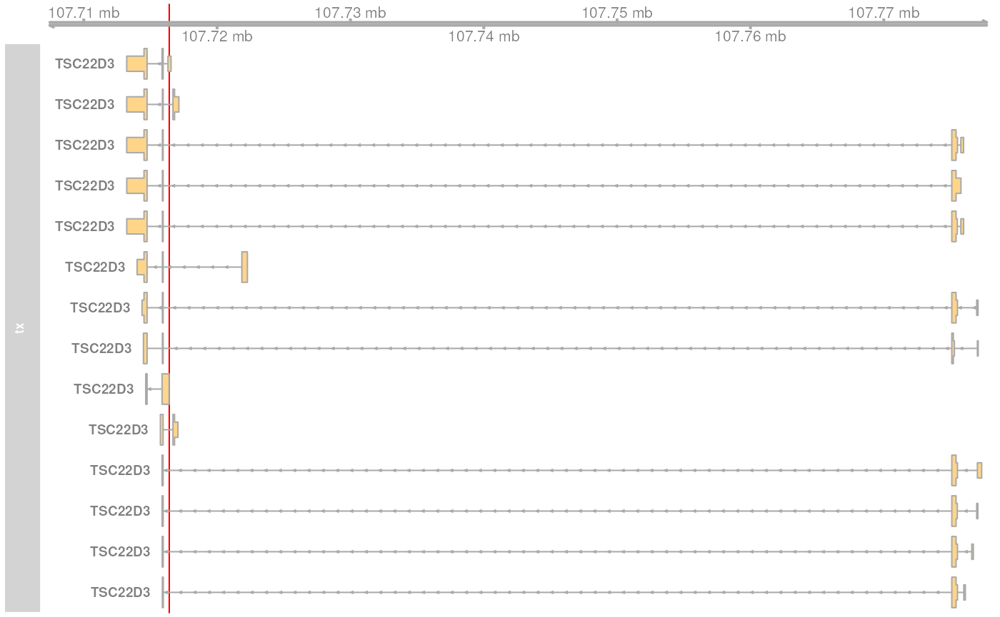
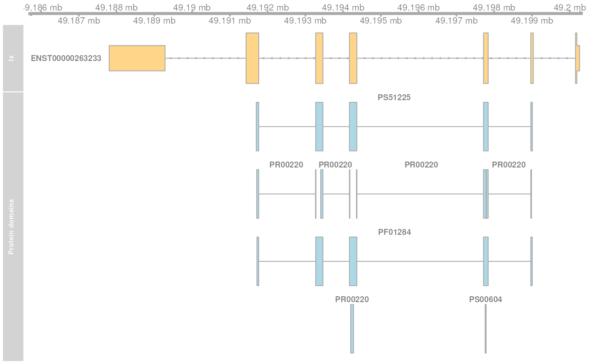

vignettes/coordinate-mapping.Rmd
coordinate-mapping.RmdBesides retrieving genomic and protein annotations, ensembldb provides also functionality to map between protein, transcript and genome coordinates. This mapping relies on annotations of proteins (their sequences) to their encoding transcripts which are stored in EnsDb databases.
The available functions and their input and result objects are:
genomeToTranscript: maps genomic coordinates to coordinates within the transcript(s) encoded at the specified coordinates. The function takes a GRanges as input and returns an IRangesList of length equal to the length of the input object. Each IRanges in the IRangesList provides the coordinates within the respective transcript.
genomeToProtein: maps genomic coordinates to positions within the sequence of the eventually encoded protein(s) in the genomic region. The function takes a GRanges as input and returns an IRangesList of the same length, each element (IRanges) providing the coordinates within the respective protein’s sequence.
proteinToTranscript: maps protein-relative coordinates to positions within the encoding transcripts. Takes an IRanges as input and returns an IRangesList of the same length with each element (IRanges) providing the coordinates within the transcript (relative to the first nucleotide of the transcript).
proteinToGenome: maps protein-relative coordinates to genomic region(s) encoding the amino acid sequence. The function takes an IRanges as input and returns a list of either GRanges (if Ensembl protein identifiers are provided in the input object) or GRangesList (if the protein identifier provided for the input range can be mapped to multiple Ensembl protein IDs).
transcriptToGenome: maps coordinates within a transcript to genomic coordinates. Takes an IRanges as input and returns a GRangesList (within-transcript coordinates can be mapped to several exons and hence genomic locations). The returned GRangesList has the same length than the input IRanges, with empty GRanges for transcripts that can not be found in the database (and thus can not be mapped to the genome) or for IRanges that define regions outside of the transcript’s sequence.
transcriptToProtein: maps regions within a transcript to the respective amino acid residues in the encoded protein’s sequence. The function takes an IRanges as input and returns an IRanges of the same length.
transcriptToCds: maps between transcript-relative and CDS-relative coordinates (for protein-coding genes only).
cdsToTranscript: maps between CDS-relative and transcript-relative coordinates (for protein-coding genes only).
All functions, except proteinToGenome and transcriptToGenome return IRanges with negative coordinates if the mapping failed (e.g. because the identifier is unknown to the database, or if, for mappings to and from protein coordinates, the input coordinates are not within the coding region of a transcript). proteinToGenome and transcriptToGenome return empty GRanges if mappings fail.
Each protein encoding transcript is annotated by Ensembl to an unique translation with an assigned Ensembl protein ID. In addition, Ensembl provides a mapping from Uniprot identifiers to Ensembl protein IDs. This is however in many cases an one-to-many mapping, i.e. a single Uniprot ID is assigned to multiple Ensembl protein IDs. As an additional complication, the coding region might not be complete for some transcripts and either their 3’ or 5’ ends (or both) are not defined (or can not be mapped to the genome). In such cases, the length of the CDS does not match the length of the annotated protein sequence. Reported position mappings between proteins and transcripts might for that particular cases not be correct. In such cases FALSE is reported in a column named "cds_ok" in the results from functions mapping to and from protein coordinates.
The cdsToTranscript and transcriptToCds functions are helpful to enable the mapping of variants in genes that are usually provided as positions within the gene’s (actually transcript’s) coding sequence. An example for such a mapping is provided in section Mapping transcript coordinates to genomic coordinates further below.
Below we load all required libraries and filter the EnsDb database containing the annotations from Ensembl release 86 to chromosome X. All genes of the examples in this vignette are encoded on chromosome X and subsetting the EnsDb to a single chromosome speeds all database queries considerably up.
Below we define a genomic region on chromosome X for which we want to identify the transcripts that are eventually encoded by that position and determine the coordinates of the genomic region within these (relative to their first nucleotide).
gnm <- GRanges("X:107716399-107716401")Before we map the coordinates we visualize the genomic region and all genes and transcripts overlapping it.
library(Gviz)
## Since we're using Ensembl chromosome names we have to set:
options(ucscChromosomeNames = FALSE)
## Define a genome axis track
gat <- GenomeAxisTrack(range = gnm)
## Get all genes in that region
gnm_gns <- getGeneRegionTrackForGviz(edbx, filter = GRangesFilter(gnm))
gtx <- GeneRegionTrack(gnm_gns, name = "tx", geneSymbol = TRUE,
showId = TRUE)
## Generate a higlight track
ht <- HighlightTrack(trackList = list(gat, gtx), range = gnm)
## plot the region
plotTracks(list(ht))
The genomic position overlaps two transcripts of the gene TSC22D3, encoded on the reverse strand on chromosome X. Below we map this position to the nucleotides within the encoded transcripts with the genomeToTranscript function.
## Map genomic coordinates to within-transcript coordinates
gnm_tx <- genomeToTranscript(gnm, edbx)As a result we get an IRangesList object of length 1 (since we defined a single genomic region as input). The IRanges in the first element of our result object provides the mapped coordinates within each transcript that is encoded in the specified genomic region.
gnm_tx## IRangesList object of length 1:
## [[1]]
## IRanges object with 2 ranges and 7 metadata columns:
## start end width | tx_id
## <integer> <integer> <integer> | <character>
## ENST00000372390 145 147 3 | ENST00000372390
## ENST00000486554 1 3 3 | ENST00000486554
## exon_id exon_rank seq_start seq_end seq_name
## <character> <integer> <integer> <integer> <character>
## ENST00000372390 ENSE00001457675 1 107716399 107716401 X
## ENST00000486554 ENSE00001927337 1 107716399 107716401 X
## seq_strand
## <character>
## ENST00000372390 *
## ENST00000486554 *The genomic region overlapped two transcripts and the transcript-relative coordinates for both are reported. The ID of the transcripts are provided as the names of the IRanges. The original genomic coordinates are listed in additional metadata columns (which can be accessed with the mcols method). Also the ID of the exon encoded at the genomic region and its index/rank within the transcript is available in the "exon_id" metadata column.
To illustrate mapping of multiple genomic regions, we define below 2 genomic regions: twice the example region from above but once restricting to the reverse and once to the forward strand.
gnm_1 <- gnm
strand(gnm_1) <- "-"
gnm_2 <- gnm
strand(gnm_2) <- "+"
gnm <- c(gnm_1, gnm_2)
genomeToTranscript(gnm, edbx)## Warning: 1 genomic region(s) could not be mapped to a transcript; hint: see ?
## seqlevelsStyle if you used UCSC chromosome names## IRangesList object of length 2:
## [[1]]
## IRanges object with 2 ranges and 7 metadata columns:
## start end width | tx_id
## <integer> <integer> <integer> | <character>
## ENST00000372390 145 147 3 | ENST00000372390
## ENST00000486554 1 3 3 | ENST00000486554
## exon_id exon_rank seq_start seq_end seq_name
## <character> <integer> <integer> <integer> <character>
## ENST00000372390 ENSE00001457675 1 107716399 107716401 X
## ENST00000486554 ENSE00001927337 1 107716399 107716401 X
## seq_strand
## <character>
## ENST00000372390 -
## ENST00000486554 -
##
## [[2]]
## IRanges object with 1 range and 7 metadata columns:
## start end width | tx_id exon_id exon_rank seq_start
## <integer> <integer> <integer> | <character> <character> <integer> <integer>
## -1 -1 1 | <NA> <NA> <NA> 107716399
## seq_end seq_name seq_strand
## <integer> <character> <character>
## 107716401 X +The result for the first region is the same as above. The result for the second region is an IRanges with negative coordinates, since there is no transcript encoded on the forward strand at the genomic position.
We can use the genomeToProtein function to map genomic coordinates to within-protein sequence coordinates. In addition to the genomeToTranscript function, this function determines whether the transcript at the genomic position encodes a protein, and if so, maps the genomic coordinates to coordinates within the respective protein sequence. To this end, the transcript-relative coordinates for the genomic region have to be located within CDS of the transcript (excluding the stop codon, i.e. last 3 nucleotides of the CDS, since they are not translated into an amino acid).
Below we define 4 genomic regions and map them to protein-relative coordinates: the first corresponds to the first 4 nucleotides of the CDS of ENST00000381578, the second to the last nucleotide of the CDS of the same transcript. The third region maps to the last nt before the stop codon of ENST00000381578 and the last region is located within an intron of the same transcript.
gnm <- GRanges("X", IRanges(start = c(630898, 644636, 644633, 634829),
width = c(5, 1, 1, 3)))
gnm_prt <- genomeToProtein(gnm, edbx)## Warning: 1 genomic region(s) could not be mapped to a transcript; hint: see ?
## seqlevelsStyle if you used UCSC chromosome names## Warning: Transcript(s) '' could not be found## Warning: Provided coordinates for 'ENST00000381578', 'ENST00000554971' are not
## within the coding regionThe resulting object has the length 4, one IRanges for each region in the input GRanges. The warning messages indicate that not all of the regions could be mapped to within-protein coordinates. We explore now the results for each input region separately.
gnm_prt[[1]]## IRanges object with 4 ranges and 9 metadata columns:
## start end width | tx_id cds_ok
## <integer> <integer> <integer> | <character> <logical>
## ENSP00000335505 1 2 2 | ENST00000334060 TRUE
## ENSP00000370987 1 2 2 | ENST00000381575 TRUE
## ENSP00000370990 1 2 2 | ENST00000381578 TRUE
## ENSP00000452016 1 2 2 | ENST00000554971 TRUE
## tx_id exon_id exon_rank seq_start seq_end
## <character> <character> <integer> <integer> <integer>
## ENSP00000335505 ENST00000334060 ENSE00001489177 2 630898 630902
## ENSP00000370987 ENST00000381575 ENSE00001489169 1 630898 630902
## ENSP00000370990 ENST00000381578 ENSE00001489177 2 630898 630902
## ENSP00000452016 ENST00000554971 ENSE00001489169 1 630898 630902
## seq_name seq_strand
## <character> <character>
## ENSP00000335505 X *
## ENSP00000370987 X *
## ENSP00000370990 X *
## ENSP00000452016 X *The genomic region could be mapped to positions within the coding regions of 4 different transcripts, each of them being annotated to its own Ensembl protein ID. The input region was mapped to the first 4 nucleotides of each transcripts’ CDS and was thus mapped to the amino acid residues 1 and 2 of the encoded protein: the first 3 nucleotides to the first amino acid, the 4th to the second amino acid. The encoding transcript ID, the exon ID, exon rank and the input genomic region are provided as metadata columns in the result IRanges. A metadata column cds_ok provides the additional information whether the length of each transcripts’ CDS matches the length of the encoded protein sequence. This is an important information, as not all protein coding transcripts in Ensembl have complete CDS, either because their 3’ or their 5’ (or both) ends are incomplete (or could not be mapped/aligned to the genome). Mappings to or from protein coordinates with a cds_ok being FALSE might not be correct and should be manually evaluated e.g. using the Ensembl genome browser.
The second genomic region maps to last nucleotide of the CDS of ENST00000381578, which is however part of the stop codon that is not translated. The coordinates can therefore not be mapped to the protein sequence and an IRanges with negative start position is thus returned.
gnm_prt[[2]]## IRanges object with 2 ranges and 9 metadata columns:
## start end width | tx_id cds_ok tx_id
## <integer> <integer> <integer> | <character> <logical> <character>
## -1 -1 1 | ENST00000381578 <NA> ENST00000381578
## -1 -1 1 | ENST00000554971 <NA> ENST00000554971
## exon_id exon_rank seq_start seq_end seq_name seq_strand
## <character> <integer> <integer> <integer> <character> <character>
## ENSE00001489174 6 644636 644636 X *
## ENSE00002438186 5 644636 644636 X *The third region can be mapped to the last nucleotide before the stop codon and was thus mapped to the last amino acid of the encoded protein.
gnm_prt[[3]]## IRanges object with 2 ranges and 9 metadata columns:
## start end width | tx_id cds_ok
## <integer> <integer> <integer> | <character> <logical>
## ENSP00000370990 292 292 1 | ENST00000381578 TRUE
## ENSP00000452016 292 292 1 | ENST00000554971 TRUE
## tx_id exon_id exon_rank seq_start seq_end
## <character> <character> <integer> <integer> <integer>
## ENSP00000370990 ENST00000381578 ENSE00001489174 6 644633 644633
## ENSP00000452016 ENST00000554971 ENSE00002438186 5 644633 644633
## seq_name seq_strand
## <character> <character>
## ENSP00000370990 X *
## ENSP00000452016 X *This region maps however to coordinates within two transcripts, each with their own translation. Below we retrieve the protein sequences for both protein IDs to evaluate if it corresponds indeed to the last amino acid for the protein encoded by ENST00000381578.
prt <- proteins(edbx, filter = ProteinIdFilter(names(gnm_prt[[3]])))
nchar(prt$protein_sequence)## [1] 292 292As expected, the position mapped to the last amino acid of the amino acid sequence associated with both protein IDs. In fact, these amino acid sequences are identical.
The result for the last region can not be mapped to any transcript-relative coordinates and hence also not to any protein. As a result, an IRanges with negative coordinates is returned.
gnm_prt[[4]]## IRanges object with 1 range and 9 metadata columns:
## start end width | tx_id cds_ok tx_id
## <integer> <integer> <integer> | <character> <logical> <character>
## -1 -1 1 | <NA> <NA>
## exon_id exon_rank seq_start seq_end seq_name seq_strand
## <character> <integer> <integer> <integer> <character> <character>
## <NA> <NA> 634829 634831 X *The proteinToTranscript method allows to map protein-sequence relative coordinates to the encoding region in the transcript. A protein identifier and the coordinates within the protein sequence have to be provided with an IRanges object, the protein identifiers (ideally Ensembl protein IDs or also Uniprot IDs) either provided as names of the object, or in one of its metadata columns. The function will first try to find the protein identifiers in the database and, if found, map the provided coordinates to transcript-relative positions.
In our first example we retrieve the transcript-relative coordinates of positions 5 to 9 within the amino acid sequence of the gene GAGE10. Below we first get the protein ID for this gene from the database and define then the IRanges with the protein sequence-internal coordinates.
GAGE10 <- proteins(edbx, filter = ~ genename == "GAGE10")
GAGE10## DataFrame with 1 row and 4 columns
## tx_id protein_id protein_sequence gene_name
## <character> <character> <character> <character>
## 1 ENST00000407599 ENSP00000385415 MSWRGRSTYRPRPRRYVEPP.. GAGE10
## Define the IRanges object.
GAGE10_prt <- IRanges(start = 5, end = 9, names = GAGE10$protein_id)Now we use the proteinToTranscript function to map the coordinates. The function also compares the length of the CDS with the length of the encoded protein sequence and, if they are not matching, returns a FALSE in the result object’s cds_ok metadata column. In such cases (i.e. when the CDS of the transcript is incomplete), the returned coordinates could be wrong.
GAGE10_tx <- proteinToTranscript(GAGE10_prt, edbx)The result is a list with the same length as the input IRanges, each element representing the mapping of the protein-relative coordinates to positions within all encoding transcripts. Note that the transcript coordinates are relative to the first nucleotide of the 5’ UTR, not of the CDS.
GAGE10_tx## IRangesList object of length 1:
## $ENSP00000385415
## IRanges object with 1 range and 5 metadata columns:
## start end width | protein_id
## <integer> <integer> <integer> | <character>
## ENST00000407599 106 120 15 | ENSP00000385415
## tx_id cds_ok protein_start protein_end
## <character> <logical> <integer> <integer>
## ENST00000407599 ENST00000407599 TRUE 5 9If Ensembl protein identifiers are used, the mapping between protein- and transcript coordinates will always be 1:1. Many Uniprot identifiers are however annotated to more than one Ensembl protein ID and the resulting IRanges for one input region might thus be of length larger than one. Below we define regions in protein sequences identified by Uniprot IDs. In addition, to illustrate a failing mapping, we add a region with an invalid ID.
ids <- c("O15266", "Q9HBJ8", "donotexistant")
prt <- IRanges(start = c(13, 43, 100), end = c(21, 80, 100))
names(prt) <- ids
prt_tx <- proteinToTranscript(prt, edbx, idType = "uniprot_id")## Warning in proteinToTranscript(prt, edbx, idType = "uniprot_id"): No CDS found
## for: donotexistantThe region within the first protein with a Uniprot ID can be mapped to 4 different Ensembl protein IDs and the coordinates are thus mapped to regions within 4 transcripts.
prt_tx[[1]]## IRanges object with 4 ranges and 6 metadata columns:
## start end width | protein_id
## <integer> <integer> <integer> | <character>
## ENST00000334060 728 754 27 | ENSP00000335505
## ENST00000381575 128 154 27 | ENSP00000370987
## ENST00000381578 728 754 27 | ENSP00000370990
## ENST00000554971 128 154 27 | ENSP00000452016
## tx_id cds_ok protein_start protein_end
## <character> <logical> <integer> <integer>
## ENST00000334060 ENST00000334060 TRUE 13 21
## ENST00000381575 ENST00000381575 TRUE 13 21
## ENST00000381578 ENST00000381578 TRUE 13 21
## ENST00000554971 ENST00000554971 TRUE 13 21
## uniprot_id
## <character>
## ENST00000334060 O15266
## ENST00000381575 O15266
## ENST00000381578 O15266
## ENST00000554971 O15266The Uniprot identifier for the second region can be mapped to a single Ensembl protein ID and we get thus coordinates within a single transcript.
prt_tx[[2]]## IRanges object with 1 range and 6 metadata columns:
## start end width | protein_id
## <integer> <integer> <integer> | <character>
## ENST00000380342 383 496 114 | ENSP00000369699
## tx_id cds_ok protein_start protein_end
## <character> <logical> <integer> <integer>
## ENST00000380342 ENST00000380342 TRUE 43 80
## uniprot_id
## <character>
## ENST00000380342 Q9HBJ8The last identifier can not be mapped to any Ensembl protein, and a region with negative coordinates is thus returned.
prt_tx[[3]]## IRanges object with 1 range and 6 metadata columns:
## start end width | protein_id tx_id cds_ok
## <integer> <integer> <integer> | <character> <character> <logical>
## [1] -1 -1 1 | <NA> <NA> <NA>
## protein_start protein_end uniprot_id
## <integer> <integer> <character>
## [1] 100 100 donotexistantThe proteinToGenome function allows to map coordinates within the amino acid sequence of a protein to the corresponding DNA sequence on the genome. A protein identifier and the coordinates of the sequence within its amino acid sequence are required and have to be passed as an IRanges object to the function. The protein identifier can either be passed as names of this object, or provided in a metadata column (mcols).
In our first example we map the positions 5 to 9 within the amino acid sequence of the protein ENSP00000385415 from gene GAGE10 to the genome.
## Define the IRanges object.
GAGE10_prt <- IRanges(start = 5, end = 9, names = "ENSP00000385415")We can now map the protein-relative coordinates to genomic coordinates. By default, proteinToGenome assumes the names of the provided IRanges object to be Ensembl protein identifiers.
GAGE10_gnm <- proteinToGenome(GAGE10_prt, edbx)proteinToGenome returns a list, one element for each range in the input IRanges. We did only map a single range and hence the result is a list of length 1. The GRanges object in the first element of GAGE10_gnm represents the coordinates of the DNA sequence encoding positions 5 to 9 in the protein.
GAGE10_gnm## $ENSP00000385415
## GRanges object with 1 range and 7 metadata columns:
## seqnames ranges strand | protein_id tx_id
## <Rle> <IRanges> <Rle> | <character> <character>
## [1] X 49304872-49304886 + | ENSP00000385415 ENST00000407599
## exon_id exon_rank cds_ok protein_start protein_end
## <character> <integer> <logical> <integer> <integer>
## [1] ENSE00001692657 2 TRUE 5 9
## -------
## seqinfo: 1 sequence from GRCh38 genomeThis GRanges contains also useful additional information as metadata columns, such as the ID of the encoding transcript (column "tx_id") the ID and index of the exon within the protein region is encoded (columns "exon_id" and "exon_rank"), the start and end coordinates from the input IRanges object (columns "protein_start" and "protein_end") and a logical indicating whether the length of the encoding transcript’s CDS matches the protein sequence length ("cds_ok"). Special care should be taken if a FALSE is reported in this last column. In such cases the returned genomic coordinates might not be correct and they should be manually checked using the Ensembl genome browser.
The reason to use a list as a result object and not, e.g. a GRangesList, was the one-to-many mappings between Uniprot identifiers and Ensembl protein IDs. To illustrate this, we map positions within 3 proteins identified by their Uniprot identifiers to genomic regions.
## Define the IRanges providing Uniprot IDs.
uni_rng <- IRanges(start = c(2, 12, 8), end = c(2, 15, 17),
names = c("D6RDZ7", "O15266", "H7C2F2"))
## We have to specify that the IDs are Uniprot IDs
uni_gnm <- proteinToGenome(uni_rng, edbx, idType = "uniprot_id")## Warning: Could not find a CDS whith the expected length for protein: 'D6RDZ7'.
## The returned genomic coordinates might thus not be correct for this protein.## Warning: Could not find a CDS whith the expected length for protein: 'H7C2F2'.
## The returned genomic coordinates might thus not be correct for this protein.The length of the protein coding region of the encoding transcript for two of the 3 proteins (D6RDZ7 and H7C2F2) do not match the length of the protein sequence. For some transcripts the CDS is not complete (either at the 3’, 5’ or both ends). Mapped coordinates might not be correct in such cases and it is strongly suggested to manually check the mapped coordinates. The result from the comparison of the protein sequence and the CDS length is provided in the "cds_ok" metadata column of the GRanges with the genomic coordinates.
uni_gnm[[3]]## GRanges object with 1 range and 8 metadata columns:
## seqnames ranges strand | uniprot_id tx_id
## <Rle> <IRanges> <Rle> | <character> <character>
## [1] X 2691521-2691550 + | H7C2F2 ENST00000449611
## protein_id exon_id exon_rank cds_ok protein_start
## <character> <character> <integer> <logical> <integer>
## [1] ENSP00000405544 ENSE00001702313 1 FALSE 8
## protein_end
## <integer>
## [1] 17
## -------
## seqinfo: 1 sequence from GRCh38 genomeMappings between Uniprot and Ensembl protein IDs can be one-to-many. In such cases proteinToGenome returns a GRangesList with each element being the coordinates calculated for each annotated Ensembl protein. In our example, each of the first two proteins was annotated to 4 Ensembl proteins.
## To how many Ensembl proteins was each Uniprot ID mapped?
lengths(uni_gnm)## D6RDZ7 O15266 H7C2F2
## 1 4 1Below we show the genomic coordinates for the within-protein positions calculated for all 4 Ensembl protein IDs for O15266.
uni_gnm[["O15266"]]## GRangesList object of length 4:
## $ENSP00000335505
## GRanges object with 1 range and 8 metadata columns:
## seqnames ranges strand | uniprot_id tx_id
## <Rle> <IRanges> <Rle> | <character> <character>
## [1] X 630931-630942 + | O15266 ENST00000334060
## protein_id exon_id exon_rank cds_ok protein_start
## <character> <character> <integer> <logical> <integer>
## [1] ENSP00000335505 ENSE00001489177 2 TRUE 12
## protein_end
## <integer>
## [1] 15
## -------
## seqinfo: 1 sequence from GRCh38 genome
##
## $ENSP00000370987
## GRanges object with 1 range and 8 metadata columns:
## seqnames ranges strand | uniprot_id tx_id
## <Rle> <IRanges> <Rle> | <character> <character>
## [1] X 630931-630942 + | O15266 ENST00000381575
## protein_id exon_id exon_rank cds_ok protein_start
## <character> <character> <integer> <logical> <integer>
## [1] ENSP00000370987 ENSE00001489169 1 TRUE 12
## protein_end
## <integer>
## [1] 15
## -------
## seqinfo: 1 sequence from GRCh38 genome
##
## $ENSP00000370990
## GRanges object with 1 range and 8 metadata columns:
## seqnames ranges strand | uniprot_id tx_id
## <Rle> <IRanges> <Rle> | <character> <character>
## [1] X 630931-630942 + | O15266 ENST00000381578
## protein_id exon_id exon_rank cds_ok protein_start
## <character> <character> <integer> <logical> <integer>
## [1] ENSP00000370990 ENSE00001489177 2 TRUE 12
## protein_end
## <integer>
## [1] 15
## -------
## seqinfo: 1 sequence from GRCh38 genome
##
## $ENSP00000452016
## GRanges object with 1 range and 8 metadata columns:
## seqnames ranges strand | uniprot_id tx_id
## <Rle> <IRanges> <Rle> | <character> <character>
## [1] X 630931-630942 + | O15266 ENST00000554971
## protein_id exon_id exon_rank cds_ok protein_start
## <character> <character> <integer> <logical> <integer>
## [1] ENSP00000452016 ENSE00001489169 1 TRUE 12
## protein_end
## <integer>
## [1] 15
## -------
## seqinfo: 1 sequence from GRCh38 genomeAs a last example we fetch all protein domains for the gene SYP and map all of them to the genome. To fetch protein domain information we select all columns from the protein_domain table. In addition, we retrieve the result as a AAStringSet. Additional annotations will be available in the mcols of this result object.
SYP <- proteins(edbx, filter = ~ genename == "SYP",
columns = c("protein_id", "tx_id",
listColumns(edbx, "protein_domain")),
return.type = "AAStringSet")
SYP## AAStringSet object of length 27:
## width seq names
## [1] 313 MLLLADMDVVNQLVAGGQFRVVK...QGDYGQQGYGPQGAPTSFSNQM ENSP00000263233
## [2] 313 MLLLADMDVVNQLVAGGQFRVVK...QGDYGQQGYGPQGAPTSFSNQM ENSP00000263233
## [3] 313 MLLLADMDVVNQLVAGGQFRVVK...QGDYGQQGYGPQGAPTSFSNQM ENSP00000263233
## [4] 313 MLLLADMDVVNQLVAGGQFRVVK...QGDYGQQGYGPQGAPTSFSNQM ENSP00000263233
## [5] 313 MLLLADMDVVNQLVAGGQFRVVK...QGDYGQQGYGPQGAPTSFSNQM ENSP00000263233
## ... ... ...
## [23] 118 MLLLADMDVVNQLVAGGQFRVVK...QYLPPQVAPAQLPPRGYIHWDH ENSP00000418987
## [24] 118 MLLLADMDVVNQLVAGGQFRVVK...QYLPPQVAPAQLPPRGYIHWDH ENSP00000418987
## [25] 118 MLLLADMDVVNQLVAGGQFRVVK...QYLPPQVAPAQLPPRGYIHWDH ENSP00000420774
## [26] 118 MLLLADMDVVNQLVAGGQFRVVK...QYLPPQVAPAQLPPRGYIHWDH ENSP00000420774
## [27] 118 MLLLADMDVVNQLVAGGQFRVVK...QYLPPQVAPAQLPPRGYIHWDH ENSP00000420774Each protein sequence of the gene SYP has multiple protein domains annotated to it, thus protein IDs and sequences are redundant in the AAStringSet. We restrict the result below to a single protein.
## [1] "ENSP00000263233" "ENSP00000418387" "ENSP00000365480" "ENSP00000418169"
## [5] "ENSP00000418987" "ENSP00000420774"
## Reduce the result to a single protein
SYP <- SYP[names(SYP) == "ENSP00000263233"]
## List the available protein domains and additional annotations
mcols(SYP)## DataFrame with 8 rows and 8 columns
## protein_id tx_id protein_domain_id
## <character> <character> <character>
## ENSP00000263233 ENSP00000263233 ENST00000263233 PS51225
## ENSP00000263233 ENSP00000263233 ENST00000263233 PS00604
## ENSP00000263233 ENSP00000263233 ENST00000263233 PF01284
## ENSP00000263233 ENSP00000263233 ENST00000263233 PR00220
## ENSP00000263233 ENSP00000263233 ENST00000263233 PR00220
## ENSP00000263233 ENSP00000263233 ENST00000263233 PR00220
## ENSP00000263233 ENSP00000263233 ENST00000263233 PR00220
## ENSP00000263233 ENSP00000263233 ENST00000263233 PR00220
## protein_domain_source interpro_accession prot_dom_start
## <character> <character> <integer>
## ENSP00000263233 pfscan IPR008253 21
## ENSP00000263233 scanprosite IPR001285 53
## ENSP00000263233 pfam IPR008253 22
## ENSP00000263233 prints IPR001285 29
## ENSP00000263233 prints IPR001285 53
## ENSP00000263233 prints IPR001285 106
## ENSP00000263233 prints IPR001285 138
## ENSP00000263233 prints IPR001285 205
## prot_dom_end gene_name
## <integer> <character>
## ENSP00000263233 227 SYP
## ENSP00000263233 61 SYP
## ENSP00000263233 221 SYP
## ENSP00000263233 51 SYP
## ENSP00000263233 78 SYP
## ENSP00000263233 130 SYP
## ENSP00000263233 161 SYP
## ENSP00000263233 223 SYPNext we create the IRanges object, one range for each protein domain, and perform the mapping of the protein domains to the genome. This time we provide the protein identifiers with one of the metadata columns and pass the name of this column with the id parameter.
SYP_rng <- IRanges(start = mcols(SYP)$prot_dom_start,
end = mcols(SYP)$prot_dom_end)
mcols(SYP_rng) <- mcols(SYP)
## Map the domains to the genome. We set "id" to the name
## of the metadata columns containing the protein IDs
SYP_gnm <- proteinToGenome(SYP_rng, edbx, id = "protein_id")The function mapped each domain to the genome and returned a list with the mapping result for each as a GRanges object. As an example we show the mapping result for the second protein domain (PF01284).
SYP_gnm[[2]]## GRanges object with 1 range and 7 metadata columns:
## seqnames ranges strand | protein_id tx_id
## <Rle> <IRanges> <Rle> | <character> <character>
## [1] X 49197759-49197785 - | ENSP00000263233 ENST00000263233
## exon_id exon_rank cds_ok protein_start protein_end
## <character> <integer> <logical> <integer> <integer>
## [1] ENSE00001094897 3 TRUE 53 61
## -------
## seqinfo: 1 sequence from GRCh38 genomeThe protein domain is encoded by a sequence spanning exons 2 to 5 of the transcript ENST00000263233. Note that the gene is encoded on the reverse strand. The individual ranges are ordered by the index of the respective exon within the transcript.
At last we plot the encoding transcript and all of the mapped protein domains for the protein ENSP00000263233 of SYP.
library(Gviz)
## Define a genome axis track
gat <- GenomeAxisTrack()
## Get the transcript ID:
txid <- SYP_gnm[[1]]$tx_id[1]
## Get a GRanges for the transcript
trt <- getGeneRegionTrackForGviz(edbx, filter = TxIdFilter(txid))
## Define a GRanges for the mapped protein domains and add
## metadata columns with the grouping of the ranges and the
## IDs of the corresponding protein domains, so they can be
## identified in the plot
dmns <- unlist(GRangesList(SYP_gnm))
dmns$grp <- rep(1:length(SYP_rng), lengths(SYP_gnm))
dmns$id <- rep(mcols(SYP_rng)$protein_domain_id, lengths(SYP_gnm))
## Since we're using Ensembl chromosome names we have to set
options(ucscChromosomeNames = FALSE)
## Plotting the transcript and the mapped protein domains.
plotTracks(list(gat,
GeneRegionTrack(trt, name = "tx"),
AnnotationTrack(dmns, group = dmns$grp,
id = dmns$id,
groupAnnotation = "id",
just.group = "above",
shape = "box",
name = "Protein domains")),
transcriptAnnotation = "transcript")
Coordinates within transcript sequences can be mapped to genomic coordinates with the transcriptToGenome function. In the example below we map coordinates within 2 transcript to the genome.
rng_tx <- IRanges(start = c(501, 1), width = c(5, 5),
names = c("ENST00000486554", "ENST00000381578"))
rng_gnm <- transcriptToGenome(rng_tx, edbx)The function returns a GRangesList with the GRanges in each element containing the genomic coordinates to which the positions could be mapped (or an empty GRanges if the transcript identifier can not be found in the database or the input range is not within the transcript’s sequence). The length of each GRanges depends on the number of exons the region in the transcript spans.
rng_gnm## GRangesList object of length 2:
## $ENST00000486554
## GRanges object with 2 ranges and 5 metadata columns:
## seqnames ranges strand | exon_id tx_id
## <Rle> <IRanges> <Rle> | <character> <character>
## [1] X 107715899-107715901 - | ENSE00001927337 ENST00000486554
## [2] X 107714748-107714749 - | ENSE00001837666 ENST00000486554
## exon_rank tx_start tx_end
## <integer> <integer> <integer>
## [1] 1 501 505
## [2] 2 501 505
## -------
## seqinfo: 1 sequence from GRCh38 genome
##
## $ENST00000381578
## GRanges object with 1 range and 5 metadata columns:
## seqnames ranges strand | exon_id tx_id exon_rank
## <Rle> <IRanges> <Rle> | <character> <character> <integer>
## [1] X 624344-624348 + | ENSE00001489178 ENST00000381578 1
## tx_start tx_end
## <integer> <integer>
## [1] 1 5
## -------
## seqinfo: 1 sequence from GRCh38 genomeThe region in the first transcript (ENST00000486554) is mapped to two genomic regions, because part of it is located in the first, and part in the second exon of the transcript. All 5 nucleotides of the second region are within the transcript’s first exon and are thus mapped to only a single genomic region.
Next we map variants in the gene PKP2 to the corresponding genomic coordinates. The variants are PKP2 c.1643DelG and c.1881DelC and the positions we are looking for are thus nucleotides 1643 and 1881 within the CDS of the gene/transcript. Looking up the available transcripts for this gene we identified ENST00000070846 as the representative transcript for the gene. Since the positions are not relative to the transcription start site we can not use the transcriptToGenome function for the mapping, but we have to map the cds-relative positions first to transcript-relative coordinates. We do this below using the cdsToTranscript function.
## Define the position within the CDS of the transcript
pkp2_cds <- IRanges(start = c(1643, 1881), width = c(1, 1),
name = rep("ENST00000070846", 2))
## Convert cds-relative to transcript-relative coordinates
pkp2 <- cdsToTranscript(pkp2_cds, EnsDb.Hsapiens.v86)
pkp2## IRanges object with 2 ranges and 2 metadata columns:
## start end width | cds_start cds_end
## <integer> <integer> <integer> | <integer> <integer>
## ENST00000070846 1668 1668 1 | 1643 1643
## ENST00000070846 1906 1906 1 | 1881 1881With the coordinates being now relative to the first nucleotide of the transcript we can use the transcriptToGenome function for the final mapping of the position to the genome.
pkp2_gnm <- transcriptToGenome(pkp2, EnsDb.Hsapiens.v86)
pkp2_gnm## GRangesList object of length 2:
## $ENST00000070846
## GRanges object with 1 range and 5 metadata columns:
## seqnames ranges strand | exon_id tx_id exon_rank
## <Rle> <IRanges> <Rle> | <character> <character> <integer>
## [1] 12 32841073 - | ENSE00000936503 ENST00000070846 7
## tx_start tx_end
## <integer> <integer>
## [1] 1668 1668
## -------
## seqinfo: 1 sequence from GRCh38 genome
##
## $ENST00000070846
## GRanges object with 1 range and 5 metadata columns:
## seqnames ranges strand | exon_id tx_id exon_rank
## <Rle> <IRanges> <Rle> | <character> <character> <integer>
## [1] 12 32822557 - | ENSE00003560237 ENST00000070846 9
## tx_start tx_end
## <integer> <integer>
## [1] 1906 1906
## -------
## seqinfo: 1 sequence from GRCh38 genomeTo verify that the nucleotides at the positions are indeed G and C as stated in the definition of the variant (c.1643DelG and c.1881DelC) we extract below the nucleotide at the identified genomic position. We thus load the package providing the genome sequence for GRCh38 on which Ensembl release 86 is based.
library(BSgenome.Hsapiens.NCBI.GRCh38)## Loading required package: BSgenome## Loading required package: Biostrings## Loading required package: XVector##
## Attaching package: 'Biostrings'## The following object is masked from 'package:grid':
##
## pattern## The following object is masked from 'package:base':
##
## strsplit## Loading required package: rtracklayer
getSeq(BSgenome.Hsapiens.NCBI.GRCh38, pkp2_gnm)## DNAStringSetList of length 2
## [["ENST00000070846"]] G
## [["ENST00000070846"]] CThe transcriptToProtein function can be used to map coordinates within a transcript to the corresponding coordinates within the encoded protein. Note that only regions within protein coding transcripts can be mapped and that coordinates within the transcript are assumed to be relative to the first nucleotide of the transcript (not of the CDS).
Below we define regions within several transcripts and map these to the corresponding amino acid residues in the protein.
rng_tx <- IRanges(start = c(501, 1, 200), width = c(5, 5, 4),
names = c("ENST00000486554", "ENST00000381578",
"ENST00000431238"))
rng_prt <- transcriptToProtein(rng_tx, edbx)## Warning: Transcript(s) 'ENST00000431238' do/does not encode a protein## Warning: Provided coordinates for 'ENST00000381578' are not within the coding
## region## Warning: The CDS of 'ENST00000486554' does not match the length of the encoded
## protein. Returned protein coordinates for this/these transcript(s) might not be
## correctThe mapping did throw several warnings. The region within transcript ENST00000431238 can not be mapped to protein coordinates, because the transcript does not encode a protein. Transcript ENST00000381578 encodes a protein, but the specified nucleotides 1 to 5 are located in the 5’ UTR of the transcript and can therefore also not be mapped. Finally, the CDS of the transcript ENST00000486554 is not complete and, while the coordinates were mapped to protein residues, they might not be correct.
rng_prt## IRanges object with 3 ranges and 4 metadata columns:
## start end width | tx_id tx_start
## <integer> <integer> <integer> | <character> <integer>
## ENSP00000425414 1 2 2 | ENST00000486554 501
## -1 -1 1 | ENST00000381578 1
## -1 -1 1 | ENST00000431238 200
## tx_end cds_ok
## <integer> <logical>
## ENSP00000425414 505 FALSE
## 5 <NA>
## 203 <NA>For transcript coordinates that could not be mapped, negative coordinates are returned (see lines/elements 2 and 3 above). The first region could be mapped, but the returned protein-relative coordinates might be wrong, because the CDS of the transcript is incomplete (hence a FALSE is reported in metadata column "cds_ok"). In fact, only the 3’ end of the CDS is incomplete for this transcript and the returned coordinates are thus correct.
## R Under development (unstable) (2022-01-27 r81578)
## Platform: x86_64-pc-linux-gnu (64-bit)
## Running under: Ubuntu 20.04.3 LTS
##
## Matrix products: default
## BLAS/LAPACK: /usr/lib/x86_64-linux-gnu/openblas-pthread/libopenblasp-r0.3.8.so
##
## locale:
## [1] LC_CTYPE=en_US.UTF-8 LC_NUMERIC=C
## [3] LC_TIME=en_US.UTF-8 LC_COLLATE=en_US.UTF-8
## [5] LC_MONETARY=en_US.UTF-8 LC_MESSAGES=en_US.UTF-8
## [7] LC_PAPER=en_US.UTF-8 LC_NAME=C
## [9] LC_ADDRESS=C LC_TELEPHONE=C
## [11] LC_MEASUREMENT=en_US.UTF-8 LC_IDENTIFICATION=C
##
## attached base packages:
## [1] grid stats4 stats graphics grDevices utils datasets
## [8] methods base
##
## other attached packages:
## [1] BSgenome.Hsapiens.NCBI.GRCh38_1.3.1000
## [2] BSgenome_1.63.4
## [3] rtracklayer_1.55.3
## [4] Biostrings_2.63.1
## [5] XVector_0.35.0
## [6] Gviz_1.39.5
## [7] EnsDb.Hsapiens.v86_2.99.0
## [8] ensembldb_2.19.8
## [9] AnnotationFilter_1.19.0
## [10] GenomicFeatures_1.47.7
## [11] AnnotationDbi_1.57.1
## [12] Biobase_2.55.0
## [13] GenomicRanges_1.47.6
## [14] GenomeInfoDb_1.31.3
## [15] IRanges_2.29.1
## [16] S4Vectors_0.33.10
## [17] BiocGenerics_0.41.2
## [18] BiocStyle_2.23.1
##
## loaded via a namespace (and not attached):
## [1] colorspace_2.0-2 rjson_0.2.21
## [3] ellipsis_0.3.2 rprojroot_2.0.2
## [5] htmlTable_2.4.0 biovizBase_1.43.1
## [7] base64enc_0.1-3 fs_1.5.2
## [9] dichromat_2.0-0 rstudioapi_0.13
## [11] bit64_4.0.5 fansi_1.0.2
## [13] xml2_1.3.3 splines_4.2.0
## [15] cachem_1.0.6 knitr_1.37
## [17] Formula_1.2-4 jsonlite_1.7.3
## [19] Rsamtools_2.11.0 cluster_2.1.2
## [21] dbplyr_2.1.1 png_0.1-7
## [23] BiocManager_1.30.16 compiler_4.2.0
## [25] httr_1.4.2 backports_1.4.1
## [27] assertthat_0.2.1 Matrix_1.4-0
## [29] fastmap_1.1.0 lazyeval_0.2.2
## [31] cli_3.1.1 htmltools_0.5.2
## [33] prettyunits_1.1.1 tools_4.2.0
## [35] gtable_0.3.0 glue_1.6.1
## [37] GenomeInfoDbData_1.2.7 dplyr_1.0.7
## [39] rappdirs_0.3.3 Rcpp_1.0.8
## [41] jquerylib_0.1.4 pkgdown_2.0.2.9000
## [43] vctrs_0.3.8 xfun_0.29
## [45] stringr_1.4.0 lifecycle_1.0.1
## [47] restfulr_0.0.13 XML_3.99-0.8
## [49] zlibbioc_1.41.0 scales_1.1.1
## [51] VariantAnnotation_1.41.3 ragg_1.2.1
## [53] hms_1.1.1 MatrixGenerics_1.7.0
## [55] ProtGenerics_1.27.2 parallel_4.2.0
## [57] SummarizedExperiment_1.25.3 RColorBrewer_1.1-2
## [59] yaml_2.2.2 curl_4.3.2
## [61] gridExtra_2.3 memoise_2.0.1
## [63] ggplot2_3.3.5 sass_0.4.0
## [65] rpart_4.1.16 biomaRt_2.51.2
## [67] latticeExtra_0.6-29 stringi_1.7.6
## [69] RSQLite_2.2.9 highr_0.9
## [71] BiocIO_1.5.0 desc_1.4.0
## [73] checkmate_2.0.0 filelock_1.0.2
## [75] BiocParallel_1.29.12 rlang_1.0.0
## [77] pkgconfig_2.0.3 systemfonts_1.0.3
## [79] matrixStats_0.61.0 bitops_1.0-7
## [81] evaluate_0.14 lattice_0.20-45
## [83] purrr_0.3.4 htmlwidgets_1.5.4
## [85] GenomicAlignments_1.31.2 bit_4.0.4
## [87] tidyselect_1.1.1 magrittr_2.0.2
## [89] bookdown_0.24 R6_2.5.1
## [91] generics_0.1.1 Hmisc_4.6-0
## [93] DelayedArray_0.21.2 DBI_1.1.2
## [95] foreign_0.8-82 pillar_1.6.5
## [97] nnet_7.3-17 survival_3.2-13
## [99] KEGGREST_1.35.0 RCurl_1.98-1.5
## [101] tibble_3.1.6 crayon_1.4.2
## [103] utf8_1.2.2 BiocFileCache_2.3.4
## [105] rmarkdown_2.11 jpeg_0.1-9
## [107] progress_1.2.2 data.table_1.14.2
## [109] blob_1.2.2 digest_0.6.29
## [111] textshaping_0.3.6 munsell_0.5.0
## [113] bslib_0.3.1